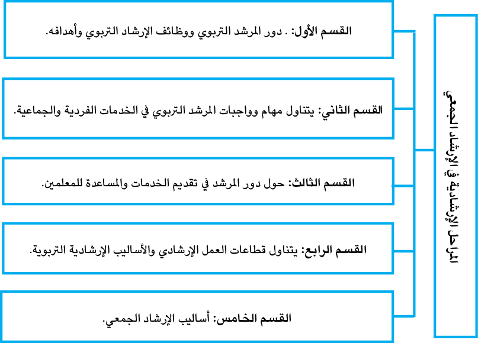
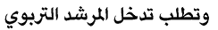

|
تُعَدُّ المدرسةُ بيئةً ملائمةً لتقديم الإرشاد الجمعي؛ إذ يكون الطـلبةُ في مكانٍ يواجهونَ فيه تحدِّيات مختلفة، ويمكن للمُرشدين النَّفسيِّين في المدرسة التَّفاعل مع الطـلبة تفاعُلًا مباشَرًا ومستمرّا، سواءً عن طريق الجلسات الفرديَّة أوِ الجماعيَّة، ويعَدُّ الإرشادُ الجمعيُّ إحدى أهمِّ الوسائل التي يَسْتَنِدُ إليها المُرشدُ لدعم شخصيَّةٍ من خلال الأساليب المُتعددة التي يستخدمها. يؤثِّر الإرشادُ الجمعيُّ في المدرسةِ تأثيرًا إيجابيًّا في الطََّلبةِ والمجتمعِ بشـكل عام، فهو يساعدُ في تحسـين الأداء الأكاديميّ، وتقليل معدَّلات التَّسرُّب المدرسيّ، وتعزِّزُ الصَّحة النَّفسـيَّة والعاطفيَّة لدى الطـلبة، كما يُعزِّزُ الإرشادُ النَّفسيّ قِيَمَ المُواطنة والاحترامِ والتَّسامح بين الطـلاب، وتُشجِّعُ على بناءِ علاقاتٍ صحيَّةٍ وإيجابيَّة في المجتمع المَدرسيّ. وبالاعتمادِ على الإرشاد الجمعيّ في المدرسة، يمكنُ للـطلبةِ أنْ يتعلَّموا كيفيَّةَ التَّعـامُل معَ التَّحدِّياتِ النَّفسيـَّة والاجتماعيَّة التي قد تواجههم في حياتهم المدرسيَّة والشَّخصيَّة، يتعلَّمونَ كيفيَّة التَّحكُّمِ في الضَّغوطِ النَّـفسيّة وإدارةِ العواطف، وذلك يؤثِّرُ إيجابيًّا في تحصيلهم الدِّراسيِّ وتطوُّرهم الشَّخصـيّ. بصفةٍ عامَّة، يُعَدُّ الإرشادُ المدرسيُّ جزءًا أساسيًّا منَ التَّأهيل الشَّامل والمتكامِل للطالب، حيث يركِّزُ على تنميةِ الجوانبِ الـنَّفسيَّة والاجتماعيَّة والعاطفيَّة للـطلبة، ويُسهِمُ الإرشادُ النفسي في بناءِ جيلٍ قادرٍ على التَّفاعُل الإيجابيِّ معَ المجتمع، ويساعدُهم في تحـقيق إمكاناتهم الكاملة، وتحقيق نجاحِهم الشَّـخصيّ والأكاديميّ. |
|
|
يمكنُ إضافةُ هذا البَنْدِ بحسَبِ الحاجةِ في المواقع التي يجدُها المؤلفُ مناسبةً. البيئة المدرسية من افضل المؤسسات لاستخدام الارشاد الجمعي. |
2.1 الهدف العام للوحدة الدراسيّة
عزيزيَ الطالب،يتوقَّعُ منك بعدَ دراستك للوحده لدِّراسيّة، أنْ تتمكَّنَ من معرفة المراحل الإرشاديّة في الإرشاد الجَمْعيِّ « المدرسةُ بوصفِها أُنموذجًا ».
|
الأهداف الفرعيَّة: أ. التَّعرُّف إلى المراحل الإرشاديَّة في الإرشاد الجمعيِّ، ومنها” المدرسةُ أُنموذج”. ب. دور المرشد التربوي. ت. وظائف الإرشاد التربوي وأهدافه. ث. مهام وواجبات المرشد التربوي في الخدمات الفردية والجماعية. ج. دور المرشد في تقديم الخدمات ومساعدة المعلّمين. ح. قطاعات العمل الإرشاديّ. خ. أساليب الإرشاد الجمعيّ. د. الأساليب الإرشاديّة التربويّة. |
|
عزيزيَ الطالب،وِفقًا للهدفِ العامِّ للوحدة، وبعدَ دراستك للوحده الدِّراسيَّة، يتوقَّعُ منكَ تحقيقُ النَّواتجِ الآتية: 1- مهارة بناء البرنامج الإرشاديّ الجمعيّ. 2- كما يسعى المقرر إلى تنميةِ وإكساب العديد منَ المُخرجات، مِنْ أهمِّها:- *مهارات التَّحليل والرَّبط بين الأفكار. ●المهارات الخاصَّة ببناء الجماعة. ●مهارة التَّخطيط للمجموعات والجلسات. ●مهارة إدارة الجلسات. ●مهارة التَّعامُل معَ الظُّروف الطَّارئة. |
4.1 الموارد والقراءات المساندة
|
عزيزيَ الطالب، أثناءَ دراستِكَ لهذه الوحده، قد تَجِدُ أنَّك بحاجة إلى مزيدٍ منَ التَّوضيحات والمعلوماتِ حوْلَ ما جاء فيها من أفكار ومفاهيم، فيمكنُكَ الرَّجوعُ إلى الموارد والمراجع التالية: 14. مصادر إلكترونيَّة: ●صفحة المقرر الالكتروني: الخطة والعروض التقديمية والوسائط المتعددة. ●الصفوف الافتراضية. 15. مصادر أخرى: ـالمشاركة والنقاشات. ـحل التدريبات وأسئلة التقويم الذاتي. ـحل الأنشطة بصورة ذاتية. ـلعب الدور أثناء المحاضرة. ـالامتحانات المعتمدة 16. مصادر ورقية: أ. القواسمة، هشام عطية والحوامدة، صباح خليل) .2010) ) . دليل المرشد التربوي في مجال التوجيه الجمعي في الصفوف. ط. عربية، الأردن. دار اليازوري. ب. الخالدي، عطالله فؤاد ( 2009) علم النفس الارشادي الدليل في الارشاد الجمعي تطبيقات علمية. عمان: دار الصفا. |
تتناولُ الوحدةُ السَّادسة موضوعاتٍ ومفاهيمَ أساسيَّةً في المراحل الإرشاديَّة في الإرشادِ الجمعيّ « المدرسةُ بوصفِها أُنموذجًا» وذلك من خلال تناوُلِ ودراسة الموضوعاتِ المُرتبطةِ بأهداف الوحدة، والشكل الآتي يوضِّحُها:

|
|
مراحل الجلسة الإرشادية: https://uomustansiriyah.edu.iq/media/lectures/9/9_2019_03_26!06_21_12_ https://platform.almanhal.com/Files/2/62976 |

|
|
هناك العديد من الأساليب والطرق التي يمكنُ استخدامُها في الإرشاد الجمعي، مثل: 1. التَّمثيل النَّفسيّ والمسرحي: يَستخدِمُ التَّمثيل بوصفِهِ وسيلةً لإظهار وتحليل المشكلات الانفعاليَّة أوِ الاجتماعيَّة التي يعانيها المسترشدون، والبحث عن حلولٍ عمليَّة لها. 2. المناقشة الجماعية: يَستخدِمُ المناقشة بوصفها وسيلةً لطرحِ موضوعاتٍ أو قضايا تهمُّ المسترشدون، والحوار حولها بطريقة منطقيّة ونقديَّة. 3. التّدريب السُّلوكيّ: يَستخدِمُ التَّدريبَ السّلوكيّ بوصفه وسيلةً لتعديلِ أو تغيير سلوكِ المسترشدين مرغوب عنه، واستبدالِه بسلوك آخرَ مرغوبٍ فيه. 4- التدريب المَهاريّ: يَستخدِمُ التَّدريبَ بوصفِه وسيلةً لتطويرِ أو تحسين مهاراتِ المُسترشدين في مجالاتٍ مختلفة، مثلِ المهارات الاجتماعيَّة أو الإداريّة أو التَّعليميّة. 5-التّدريب الإدراكيّ: يَستخدِمُ التَّدريبَ الإدراكيَّ بوصفه وسيلةً لتصحيح أو تغيير طريقة تفكير المسترشدين غير المنطقيَّة أو السَّلبية، واستبدالها بطريقة تفكير منطقيَّة أو إيجابيَّة. |

|
محاضرة الارشاد الجمعي: https://www.youtube.com/watch?v=pwJTBHvB4a |
|
عند استخدامِ الإرشادِ الجمعيّ: توفيرُ بيئةٍ آمِنَةٍ، وتشجيعُ المُسترشِدِ على التَّفاعُلِ والتَّطوير. هل هناك حالاتٌ يُمْنَعُ فيها استخدامُ الإرشادِ الجمعيّ؟ |
الإرشادُ الجمعيّ يتكوَّنُ من أربعِ خطواتٍ أو مراحلَ أساسيَّة:
المرحلة الأولى: تسُمَّى بالمرحلة التَّمهيديَّة ( التّشكُّل) وفي هذه المرحلة، يكونُ الهدفُ الأساسيُّ، منها التَّغلُّبُ على الإحساسِ بالغربةِ، وبناء أجواءٍ آمِنَةٍ ومُمْتِعَةٍ بين أعضاءِ المجموعة، وبينهم وبين المُرشد، يحـاوِلُ كـلُّ فـردٍ إظهـارَ نفسِـه إظهارًا مثــاليًّا؛ ليُعْجِـَـب مَـْـن حوَلَــه، وأيُّ جماعةٍ في بدايةِ تكوينها لا تخلو مِنَ التَّعرُّض لمواقف مَنَ الخوْفِ والقَلـق والتَّـوتر، ويسودُ أعضـاؤها عـدمَ الرَّاحـةِ والارتبـاكِ والتَّعقيـدِ، ويكونـونَ حـذِرينَ في تصرُّفـاتِهم حتـى يتجنّبوا أيَّ إحــراجٍ ويكونــوا - كــذلك - غـيـرَ مســتعدِّينَ لمناقشــة قِيَمهم ووجهــات نظــرِهم الشَّخصيّة مع أفراد غيرِ مُعـروفينَ بالنَّسـبةِ لهـم، وهـذا يجعـلُ بعضًـا مـنهم يتعامَـُل مـعَ الآخرين بحذَرٍ وحرْصٍ شديديْنِ، ويجعلُ بعضَهم الآخرَ ينْسَحِبُ منهم، ويَنْعَزِلُ عنهم سـواءً أكان ذلك الانسحابُ والانعزالُ عضـويًّا أم ذهنيـًّا.
هنا، يأتي دورُ المرشدِ من خـلال التَّخطـيطِ المسبق للقـاءات، وبنـاءِ فعاليَّاتِ تخدُمُ الهدفَ مـِنْ كـلِّ لقـاءٍ، منهـا فعاليَّـاتُ التَّعـارفِ( كَسْرُ الجليـدِ) ممَّا يُتـيحُ ذلكَ مشاركةَ الجميعِ، وهذا المؤشِّر إلى بداية الإحساسِ بالأُلفة والأَمان داخلَ المجموعة، ويشبِّهُ سـميث( 1980 ) هـذه المرحلـةُ بمرحلـةِ الولادةِ؛ إذ يكـونُ الطفـلُ متعلِّقًـا بأهلِـهِ مُعتمِدًا عليهم، ومرتبطًا بهم، وهكذا يرتبطُ أفرادُ المجموعةِ بالمُرشد، حيث يشـعرون بالحاجـة إليه (ها)، ويتقبلونه (ها) دونَ معارضةٍ، وكلُّ ما يشغلهم هو قضيةُ التَّقبُّل والانتماء.
وتواجِهُ هذه المراحله عددًا منَ العراقيل والصُّعوباتِ، التي قد تَعـوقُ مسيـرتَها، وتَحُـولُ دونَ الاستمرارِ فيها واستكمالها، وتتمثَّلُ هذه العراقيـلُ في عـددٍ مـنَ المفـاهيم الخطأ، والأفكـار الشَّاردةِ، والتَّساؤُلات الحائرة، والاستفسارات الضـَّالة، التـي تسيطرُ على عقـولِ أعضـاء المجموعـة، منـذ لحظةِ انضمامهم إليها، وتتعلَُّق بمَهَمَّة الجماعةِ، ووظائفها، وإنجازاتها، ومدى تحقيـق أهـدافهم الفرديَّةِ الخاصَّة لكلٍّ منهم، ضمن الإطـار العـامِّ للهـدفِ المُشـتركِ المُوَحِّـِد لهـم جميعـا، الـذي يُعَدُّ هدفًا عامًّا للجماعة ككلٍّ بوصفها وحدةً اجتماعيَّةً ذاتَ كيـانٍ مُسْتَقِلٍّ عـن أعضـائها، لــذا، فــإنَّ قائــدَ الجماعــةِ الكُفُــؤِ في عملِــهِ يَبْــذُلُ قصــارى جهــدِه لتنقيــةِ جــوِّ الجلسات الجماعيَّة في بداية تكوينها، ولا بُدَّ أنْ يعملَ على إزالةِ حالات الخوْفِ والقلقِ والتَّوتُّرِ التي تَســودُ بيــنهم، ويعمــل عــلى تصــحيح المفــاهيم الخاطئة في أذهــان أعضــائها أولا بــأول ، وغرس بـذور الثقـة في نفوسـهم ونفوس زملائهم، ومسـاعدتهم عـلى تحقيـقِ أهـدافهم الفرديـَّة الخاصَّة، إذا كانت مشروعة، ويمكِنُ تحقيقُها في إطـارِ العمـلِ الجمـاعيِّ الكُـليّ، ولـنْ يتسـنَّى لقائدِ الجماعةِ أنْ يحقِّقَ كلَّ ذلك إلا بتدعيم وتنمية التَّفاعُل الاجتماعيّ الدِّيناميّ بينهم.
المرحلة الثانية وتُسَمَّى بالمرحلة الانتقاليَّة للجماعة أو مرحلة العمل الجماعيّ
إنَّ بناءَ الجماعةِ، في هذه المرحلة يظلُّ متـأثرا ببعض ما يَشُوبُه من رواسبَ غيرِ جيّدةٍ مُتبقيَةٍ منَ المرحلةِ التَّمهيديَّة السَّابقة، وتكون قدْ تسرَّبَتْ إليها مِنَ المرحلة التَّمهيديَّة، وتكونُ مَهَمَّةُ المُرشِدِ في هذه المرحلة، بناءَ الوعي والإدراكِ لدى كلِّ فردٍ بالآخر. وأيضًـا، عـلى المُرشدِ مُواجهةُ هذه التَّحدِّياتِ، وينغي له حلُّها بطُرُقٍ بنَّاءةٍ، والتَّعامُـلُ معهـا بطريقـةٍ تـتلاءمُ ونفسـيَّةِ الأفرادِ بالمجموعة، وتنسجِمُ مع حاجات المجموعةِ وأهدافها انسجامًا يُتـيحُ لكـلِّ فـردٍ الحيّـزَ الخاصّ به، ولكي نضمنَ هذا المَناخ الإيجابيّ، من الضروريّ بناءُ قوانينَ للمجموعة، يتم صياغتها بشكلٍ جماعيّ، تُسْهِمُ في تقويةِ حسِّ الالتزام والانتماء للمجموعة، ومثـال ٌعـلى تلـك القـوانين، الالتزامُ بالوقت، والخصوصيّة داخلَ المجموعة، واحترام الآراء، واقتراحات كلِّ فردٍ في المجموعـة...إلخ.
وتُسهِمُ شخصيَّةُ المُرشدِ وقدراتُه ومهنية وأسلوبُه في عبورِ هـذه المرحلةِ بأَمان، حيث من الضروريّ أنْ تَكونَ لديه المَرونةُ والقـدرةُ عـلى امتصـاص الكثيـرِ مـن مشاعرِ الغضبِ والانتقاد، وسرعةُ البديهةِ، وتحويلُ الصِّراعـات بين أفـراد المجموعـة إلى نقـاطٍ للإثراء، إنَّ خلقَ جوٍّ تَسودُه التَّبادليّة، واحترام الـرأي الآخـر، وتقبُّـل الآراء ،يرفَـُع مِـنَ الإحساسِ بالأُلفة والاحترام المتبادل والانتماء والتَّقبُّل.و هنا، تُبْنَى هُوِيَّةُ المجموعة.
يشبِّهُ سميثُ نتيجةَ هذه المرحلةِ بمرحلةِ البلوغ؛ إذ يُصبِح أفرادُ المجموعـةِ أكثرَ نضجًا، فتهدأ الصّراعات بينهم (مَنْ يُسيطر على مَن، ويؤثِّر على مَن)، ويزولُ قلقُ الانتماءِ للمجموعة.
ويمكنُ تلخيصُ بعضِ المَهامِّ الأساسيَّةِ التي يحتاجهـا المرشـدُ لنقـل المجموعـةِ إلى المرحلـة الثالثة (مرحلة تماسُكِ المجموعة) التي يمكنُ حصرَها في النقاط الآتية:
ـتعليمُ أعضاءِ المجموعةِ أهمّيةَ التَّعبير عنِ القلق.
ـمساعدةُ المشاركين في التَّعرُّفِ إلى الطـُّرُقِ التـي يَسـلكونَ مـن خلالهـا سلوكًا دفـاعيًّا،
ـملاحظةُ الإشاراتِ التي تدلُّ على المقاومةِ والاتِّصالِ مـعَ الأعضـاءِ، مـعَ مراعـاةِ أنَّ بعـضَ هذه المقاوماتِ طبيعيَّةٌ وصحيَّة.
ـتعليمُ الأعضاءِ قِيمَةَ التَّعرُّفِ والتعامل بانفتاح مع الصِّراعات التي تحصل في المجموعة.
ـإعطاءُ نموذج للأعضاء عن طريق التعامل المباشر وبأمانة مع أي تحدٍّ للقائـد بوصفه شـخصًا أو قائدًا.
ـمعاونة أعضاء المجموعة في التعامل مع أيِّ أمرٍ يمكنُ أنْ يؤثِّر في قدرتهم على أنْ يكونـوا مُستقلِّين.
المرحلة الثالثة: تُسَمَّى مرحلةُ تماسُك الجماعةِ أو مرحلـة الأداء، ومرحلـة الإنتاج، ومرحلة البناء، ومرحلة التَّلاحُم؛ إذ تمتاز هذه المرحلة بالتَّقاربِ والوديَّـة بين أعضـاءِ المجموعةِ، إذ إنَّه بعدَ وصولِ الفردِ إلى وعيٍ ذاتيٍّ، يستطيعُ أنْ يكونَ قريبًا مِنَ الآخـر، فيسـتمرُّ التَّفاعلُ بين أفراد المجموعةِ، وتَتَعَمَّقُ العلاقةُ بينهم، ويبدأُ التَّأثيرُ المُتبادَلُ بينهم في أجـواءٍ مـِنَ المُتعةِ والمسؤوليّة المُتبادلة، يَظهرُ الاحترامُ وتقديرُ الاختلافاتِ لدى كلِّ فـردٍ، فيعلمُ بذلك الأعضـاءُ أنَّ علاقاتِهم تستندُ إلى التَّعاون والتَّقبُّل وزيادةِ الرُّوحِ المعنويّة، والعمـلِ الجماعـيِّ بـروحِ الفريـقِ، والاندماج في العمل، وزيادة جاذبيَّة الجماعة للفـرد، وتهـدفُ إلى تحقيـقِ أهـداف المجموعة.وهنا،يرى أعضاءُ المجموعةِ دورَ المُرشد في مساعدتهم على تحقيق هذه الأهداف، ويمكنُ للقائدِ القيامُ ببعضِ الخطواتِ المُسْهِمَةِ في تدعيمِ تماسُك الجماعةِ، منها:
1. تعريف السّلوكيّات التي تدلُّ على الثّقة والتّماسُك بين الأعضاء.
2. تحديد مستوي لتّماسُك داخلَ الجامعة.
3. عرض سلوك أُنموذجيّ للتّماسُك بوصفِه قدوةً أمامَ الأعضاء.
4. تعزيز أسلوب زيادة جاذبيَّةِ الجماعة لأعضائها من خلال خلْقِ روح التَّماسُك فيها.
5. ومما يدلُّ على أنَّ الجماعةِ قدْ بدأتْ بالتَّماسُك ما يلي:-
أحاديثُ الأفرادِ، وذلك بملاحظة عدد المرات التي يَستخدِمُ فيها أعضـاءُ الجماعـةِ كلمـة (أنا) وكلمة (نحن) في أحاديثهم فكلَّما زاد استخدام عبارات (نحن) زادَ تماسُكُ الجماعة، كـذلك العبـارات المعـبِّرة عـنِ الشُّـعور بالرِّضـا أو عدمـه.
1. درجة التزام أعضاء الجماعة بمعاير متفق عليها.
2. احتفاظ الجماعة بمتماسكها في أوقات الأزمات.
3. الحالة الانفعالية لأفراد الجماعة.
المرحلة الرابعة: مرحلة الإنهاء Termination Stage
تلخّصُ هذه المرحلةُ النتائج وتقدّم التوجيهات المستقبليّة، ويمكن القول إنّ الأعضاء يَصِلونَ لمرحلة التلاحم والتعبير عنِ الذَّات بـ (نحن) عندما يحدُثُ مـا يلي:
1. يشعرُ كلُّ عضوٍ أنَّه ليس الوحيد في تعرُّضه للمشكلات والمعاناة .
2. يشعرُ كلُّ عضوٍ أنَّه أصبح محبوبًا ومقبولًا عندَ الآخرين أكثرَ من ذي قبل.
3. يشعرُ كلُّ عضوٍ أنَّ بمقدوره مواجهةَ مشكلاتِهِ، وليس كما كان يعتقد.
4. يشعرُ كلُّ عضوٍ بتحديد الآمال لديه، وإمكان تحقيقها على الرغم من الصـعوبات التـي قد تواجهه.
5. يشعرُ كلُّ عضوٍ أنَّـه أصـبحَ أكـثرَ اقترابـًا لعـددٍ كبـيرٍ مِـنَ الأعضـاء المشـاركين في العمـل الإرشاديّ.
6. يشعرُ كلُّ عضوٍ بالأُلفـة بين أعضـاء المجموعـة، وبـأنّها عامـلٌ مثْمِـٌر وفعَّـالٌ في المجموعة.
7. يحاولُ كلُّ عضوٍ التَّأثيرَ في الأعضاءِ الآخرين، والتأثر بهم.
8. يرغبُ كلُّ عضوٍ في الاستماع لمَا يقولُهُ الأعضاءُ ويتقبَّلُه.
9. يشعرُ كلُّ عضوٍ بأمانٍ وطمأنينةٍ أكثـرَ، بالإضـافة إلى زوال التَّـوتُّر الـذي كـان يحـدُثُ في الجلسات الأولى.
10. يزدادُ التَّحدُّثُ عنِ النَّفسِ ومعاناتها وأحوالها وظروفها.
11. يحترمُ كلُّ عضوٍ المعاييرَ والقِيَمَ المُوجَّهةَ لتصرُّفات الآخرين من الأعضاء.
12. يشعرُ كلُّ عضوٍ بأنَّ النَّاسَ جميعًا يمكنُ أنْ يكونوا طيِّبينَ إذا حاولوا نزع الأقنعة الزَّائفةِ عن وجوههم بحيث يصبحون تلقائيين غيرَ مخادعين.
13. يشعرُ كلُّ عضوٍ أنَّ مشاعر العزلة التي كان يشعر بها هـي مشـاعر كانـت سـائدة بين أعضاء المجموعة من قبل، وليست عنده فقط، وقد انتهت الآن.
هكذا تبيّن لنا من استعراض المراحل الإرشاديّة في الإرشاد الجمعيّ بأنّها تمثّلُ هيكلًا مُنظّمًا يُسهمُ في تحقيق أهداف الجلسات الجماعيّة إسهامًا فعّالا، وتكمنُ أهمية تشكيل المجموعة ( التمهيدية ) في ضمان توافق الأعضاء من حيث المشكلات المشتركة، وبينما توفِّرُ مرحلةُ العمل الجماعيّ أو الأداء فرص تبادل الخبرات والتّعلّم المُتبادل توفيرًا كثيرا، وتسعى مرحلةُ التّماسُك الجماعيُّ إلى تعزيز الثقة بين الأعضاء، وإزالة الحواجز، وتأسيس هُوِيّة جماعيّة مائزة، وأخيرا، إنَّ مرحلةَ الإنهاءِ والختام لا تقلُّ أهميّة عن غيرها؛ إذ يتمّ فيها تلخيص النتائج والنصائح والتوجيهات المستقبليّة.
من هنا، ننتقل إلى الحديث عن دور المُرشد التّربويّ؛ حيث تعد المَدرسةُ أُنموذجًا رياديًّا يُجَسِّدُ واقعًا مُهمًّا للإرشادِ الجمعيّ من خلالِ الأدوارِ التي يُمارسُها المُرشِدُ التَّربويّ في المدرسة.
1.2 دورُ المُرشد التَّربويّ في المدرسة
يُعَدُّ الإرشادُ التّربويُّ ظاهرةً تربويَّةً حضاريَّةً حديثةً، وقد أصبح في كثير من دول العالم ركيزةً من الرّكائز الأساسيّة التي تَستند إليها العمليةُ التّربويّة، وهو عمليّةٌ تربويّةُ تقومُ على الارتقاء بالاتجاهات والمهارات والقدرات والعادات، التي تؤدِّي إلى الصِحة النَّفسيَّة والتَّكيُّف الاجتماعي، وهو أيضا علاقةٌ تبادليَّةٌ بين فرديْنِ؛ يقومُ فيها أحدهما- وهو المرشدُ التَّربويُّ، بسبب تدريبِهِ وخبرتِهِ ومؤهلِّهِ - بمساعدة الشَّخص الآخر، وهو المسترشد، أو الطالب؛ بهدف تعديل سلوكه، ومعاونته للوصول إلى القرار المناسب، وهي عمليّة اختياريّةٌ تحترمُ حريَّة الفردِ في الوصول إلى الحلِّ المناسبِ بطريقةٍ مَوضوعيّة.
تعريف المرشد التربوي: هو شخصٌ متخصِّص في مجال الإرشادِ النّفسيّ التّربويّ، ومِهْنِيٌّ يُسْهِمُ في مساعدةِ الطلبة أو الأفراد في التغلُّبِ على مشكلاتِهم التَّعليميّة أوِ النَّفسيّة أوِ الاجتماعيّة، ومتفرّغٌ يعملُ على اكتشافِ، وفهمِ، واستخدام قدراتِه، وإمكاناتِه، بالتَّعاونِ معَ الأطرافِ الدَّاعمةِ والمُساندة، مثل: المدير، المعلم، المدرسة، الأهل، المجتمع المحلي؛ ليقومَ بتقديمِ الدّعم والإرشاد في بيئةٍ تعليميَّةٍ ناجحة، ومن اجل تحسينِ سلوكيّاتِ الطلبةِ، وتطويرِ أدائهم الدّراسيّ، وتنميةِ مهاراتهم الشّخصيّة الاجتماعية.
1. الوظيفة النّمائية:
وتأخذُ - بعين الاعتبار- متطلَّباتِ النُّمو المختلفةِ للفرد، ويكون الاهتمام بالنواحي الشخصيّة والاجتماعيّة والتّربوية والمِهْنِيَّة، ومساعدة الطلبةِ على تحقيق النُّمو إلى أقصى حدٍّ ممكن تسمحُ به إمكاناتهم وقدراتهم ، وتعليمهم مهارات التواصل والاتصال، والنمو العاطفي، والنمو المعرفيّ.
2. الوظيفة الوقائية:
تركِّز على وقاية الأفراد من الوقوع في المشكلات، والحدّ من المخاطر أو المشكلات النفسيّة والاجتماعيّة، من خلال قديم الدّعم والاستراتيجيّات التي تساعدهم على تجنُّب الأزمات والمخاطر. وتُعزّزُ مهارة التكيّف، والحدّ من العزلة، والوقاية من الصِّراعات الاجتماعية.
3. الوظيفة العلاجية:
وتهدفُ هذه الوظيفةُ إلى مساعدةِ الطلبةِ على التَّعافي مِنَ التَّحدّياتِ النَّفسيَّةِ أوِ العاطفيّة، وتقديم أدواتٍ وتقنياتٍ لتحسين حالتهم النّفسيّة والصِّحة العامّة، كما أنّها تركِّز على تقديم المساعدة العلميّة الإرشاديّة الفنيّة الممكنة للطلبة؛ للتخلُّص منَ الصعوبات الاجتماعيَّة والتَّربويَّة والنَّفسيَّة والمِهْنِيَّة التي تواجههم، والعمل على حلِّها واتِّخاذ القرارات المناسبة فيها.
تهدفُ العمليّة الإرشادية في المدرسةِ إلى تحقيق الأهداف التربويّة الإرشادية التالية:
1. زيادة معرفة الطالب بنفسه، وبالعالَمِ المحيط، واكتساب مهارات السُّلوك الاجتماعيّ البنَّاء، وتطوير اتجاهاته الإيجابيّة، نحو ذاتِه، ونحوَ الآخرين.
2. تطوير إمكاناتِ الطالبِ وسلوكيّاته؛ بهدف تجنُّب وقوعِهِ في المشكلات، ومِنْ ثَمَّ، تحسين قدراته على التَّعامُلِ معَ الأفراد، والمواقف المختلفة.
3. تقديم المساعدة الفنيَّة المتخصِّصة للطالب؛ بهدف التَّعرُّف إلى جوانب المشكلة التي يواجهها، وأساليب مواجهتها، واتِّخاذ القرارات الإيجابية فيها.
4. التَّعرُّف إلى قضايا الطلبة، ومشكلاتِهم التَّربويّة والاجتماعيَّة والمِهْنِيَّة والصحيَّة والنَّفسيَّة والاقتصاديَّة، والعمل على مواجهتها.
5. تحسين عاداتِ الطالبِ الدِّراسيَّة.
6. تعليم الطلبةِ أسلوبَ حلِّ المشكلات.
7. تحسين مهارات الاتِّصال عند الطلبة.
8. مساعدة الطالب على التَّكيُّفِ مع نفسه، ومع أسرته، ومدرسته، ومجتمعه.
9. تزويد الطلبة بالتوجيه التّربويّ والمِهْنِيّ المناسبيْن.
10. مساعدة الطالب في اختيار التّخصُّص أوِ المِهْنَةِ التي تتناسب وقدرتَه وإمكاناتِه في ضَوْءِ حاجةِ البلد.
11. تعليم الطالب مهارةَ ضبطِ الذَّاتِ، وتكوينَ الصَّداقات.
12. تنمية التَّوجُّهِ الذَّاتي لدى الطالب، وتمكينه من استخدام أسلوبِ حلِّ المشكلة، واتّخاذ القرار بطُرُقٍ موضوعيَّةٍ سلميَّة.
13. مساعدة الطالبِ على تكوين علاقاتٍ فاعلةٍ ومثمرةٍ معَ الآخرين.
14. صناعة القرارات التي يرغب فيها.
15. وقاية الطلبة من وقوعهم بالمشكلات السُّلوكيّة أو التربويَّة.
التقويم الذاتي ( 1 )

|
صنِّفِ الأهدافَ التَّربويَّة حسَب أولويّةِ تنفيذِها بما يحقِّقُ مصلحةَ الطالب. |
كما يهدف الإرشادُ التربويُّ إلى تحسين العمليّةِ التَّربويَّةِ من خلال ما يلي:
أ. التَّعرُّف إلى حاجاتِ الطلبة التّربويّة.
ب. إثارة الدافعيَّةِ والحافز للتّحصيل الدّراسيّ.
ت. التَّعرُّف إلى مستويات الطلبة، وتكييف التَّعليم لِمَا يتناسبُ والفروقَ الفرديّة.
ث. زيادة إقبال الطالب على الدِّراسة، وحلِّ الواجبات الدّراسيّة.
مَهامّ المرشدِ التَّربويّ وواجباته:
1. وضعُ خطّة إرشاديّة شاملةٍ لجميع القطاعات الإرشاديَّةِ تتناسَبُ وحاجات المدرسة والطلبة والمجتمع المحلي وتقييمها.
2. توضيحُ طبيعةِ عمله الإرشاديّ للهيئةِ التَّدريسيَّة والإداريّة والطلبة وأولياء الأمور والمجتمع المَحِليّ.
3. جمعُ المعلوماتِ عنِ الطلبة التي تساعدُ في فهم سلوكيّاتهم.
4. إجراءُ المقابلات الفرديَّة والجماعيَّة عن طريق المقابلة الإرشاديَّة والإرشاد الجمعيّ العلاجيّ.
5. متابعةُ حالاتِ الغياب والتَّأخُّر المتكرِّر والتَّسرُّب.
6. العملُ بوصفِهِ مستشارًا في مجلس الضبط.
7. متابعةُ التَّحصيل الدِّراسيّ للطلبة، والعمل على زيادة الدافعيَّة؛ للتَّحصيل عند الطلبة.
8. القيامُ بالتَّوجيه المِهْنِيّ والتَّربويّ للطلبةِ من خلال التَّوجيه الجَمْعيِّ في الصّفوف.
9. إعدادُ النَّشراتِ التَّربويّة الإرشاديّة.
10. إجراءُ الدِّراساتِ والبُحوث الإرشاديَّة التَّربويّة.
11. المحافظةُ على سريَّةِ المعلومات؛ لكي يكسِبَ ثقة المسترشد.
12. احترامُ المسترشدِ وتقبُّلُهُ مهما كانتِ المشاعر التي يحملها تجاهه.
تدريب ( 1 )

|
استذكر المشكلات الشائعة التي قد يعاني منها الطلبة وتطلب تدخل المرشد التربوي. |
الممارسات أو الأعمال التي يجبُ أنْ يبتعدَ المرشد التربوي عنها:
أ. المناوبة.
ب. الإشرافِ على المقصف المدرسيّ.
ت. الإشرافِ على الرِّحلات المدرسيّة.
ث. الإشرافِ على الهلال الأحمر، والصحة المدرسيّة، أو أيِّ نشاطٍ آخر.
ج. الإشرافِ على الإذاعة المدرسيّة.
ح. توزيع المساعدات المالية والعينيّة على الطلبة، وجمع الرسوم المدرسيّة.
خ. الإشراف على اللجان التي تُناط إليها أعمال المحافظة على الهدوء والنّظام في المدرسة.
د. تحويلِ الطلبة إلى العيادات الطبية.
ذ. كتابة الإنذارات والتنبيهات للطلبة.
ر. الإشرافِ على أنشطةِ الكشافة والمرشدات.
ز. تفقُّدِ الحضور والغياب والتأخر الصباحي اليوميّ لطلبة المدرسة.
س. تكليف المرشد بضبط صف أو تهدئته؛ بسبب تأخُّر معلم الحصة أو تغيبه.
ش. المراقبةِ في الامتحانات المدرسيّة لطلبة المدرسة التي يعمل بها المرشد التربوي.
ص. تكليفِ المرشد بزيارة الصفوف أثناء الحصة، وبوجود المعلم، إلا إذا تمَّ التَّنسيق بين المرشد والمعلم؛ بهدف متابعة أحد الطلبة، أو مجموعة طلاب، وملاحظة سلوكهم داخل الحصّة.
نشاط ( 1 )

|
نسِّقْ لحوار جماعيٍّ مع زملائك، وناقشْ فيه الدَّوافعَ وراءَ منعِ المُرشد من بعض الممارسات، أو الأعمال التي يجب أن يبتعدَ عنها. |
الإرشاد الفردي: للتعامل مع المشاكل والصعوبات الفردية
الإرشاد الجماعي: للتعامل مع المشاكل والصعوبات في الجماعة
التوجيه الجمعي: للوقاية من المشكلات والصعوبات النفسية، الاجتماعية، تنمية وتطوير قدرات الطلاب، التوجيه المهني.
الدراسات: لتحديد الحاجات على المستوى النفسي، الاجتماعي، التربوي.
التحويل:
ـتحويل الطلاب الذين يعانون اضطراباتٍ نفسيَّةً.
ـتحويل الطلاب الذين يعانون أمراضًا نفسيَّة.
ـتحويل الطلاب الذين يعانون صعوباتِ تعلُّم.
1.3 دورُ المُرشد التَّربويّ في مجالِ الخدمات الفرديَّة:
1. التَّعرُّفُ إلى قضايا الطلبة، ومشكلاتهم التَّربويّة، والمِهْنِيَّة والصِّحيَّة والاقتصاديَّة والأُسريَّة والانفعاليَّة والاجتماعيَّة.
2. العملُ على وقايةِ الطلبة منَ الوقوعِ في المشكلات الدِّراسيَّة والنَّفسيَّة.
3. تحسينُ مهاراتِ الاتِّصال والتَّواصُل لدى الطلبة.
4. تعليمُ الطلبةِ أسلوبَ حلِّ المُشكلات.
5. زيادةُ السُّلوكِ الانضباطيّ في المدرسة.
6. تصميمُ البرامج العلاجيَّةِ للقضايا السُّلوكيّة والنَّفسيَّة، التي يعاني منها الطلبة.
7. إرشادُ الطلبةِ ذوي الحاجات الخاصّة، وتقديمُ المساعدة لهم.
8. تقديمُ الخدماتِ الاستشاريَّة للمعلِّمينَ وأولياءِ أمورِ الطلبة.
9. تسهيلُ حاجاتِ الطلبةِ وإشباعها (الحبّ، وتقبُّل الذّات والآخرين، والتَّعامُل معَ الواقع، وتنمية القِيَمِ الخُلُقيّة لديهم).
2.3 دور المُرشِد في مجالِ خدمات التَّوجيه الجَمعيّ في الصفوف:
يقومُ المرشدُ التربويّ بتقديم برنامجٍ أُسبوعيٍّ لمدير المدرسة،على الأقلِّ أربعِ حصصٍ أسبوعيّا، يوضِّحُ فيه الصُّفوف التي يريدها لمناقشة قضايا تربويّة، مثل:
ـ- أساليب الدِّراسةِ السَّليمةِ، وتنظيم الوقت.
ـ- العاداتِ الصحيَّة السَّليمة والوقاية منَ الإمراض.
ـ- العاداتِ السُّلوكيَّة السَّلبيَّة، مثل: الكَذِب، السَّرقة، الخجل.
ـ- ضعف التَّحصيل الدِّراسيّ.
ـ- العلاقة بين الطالب، والمعلّم، والأُسرة وقلقِ الامتحانِ.
ـ- التّوعيّة الوقائيّة منْ أخطار المُخَدَّرَات.
ـ- حماية الطفل منَ الإساءة والعنف المدرسيّ.
تدريب ( 2 )
|
ما مجالاتُ الإرشادِ التربويّ؟ |
3.3 دورُ المرشدِ في المجالِ الصِّحيّ:
- التَّعرُّف إلى الطلبة الذين يعانونَ مشكلاتٍ صحيّةً وأمراضًا مُزْمِنَةً.
- التَّعرُّف إلى حالاتِ الأمراض المُعْدِيَة؟
دورُ المُرشدِ التَّربويّ في مجالِ تقديمِ الخدماتِ المساعدة للمعلِّمين:
1. التَّعاون في حلِّ مشكلاتِ الطلبة.
2. تدريب المُعلِّمين على أساليبِ حلِّ المشكلات.
دور المرشدِ التَّربويّ في مجال تقديم الخدمات المساعدة للإدارة:
1. متابعة الغيابِ، والتَّأخُّر المتكرِّر، وأسبابه، وطرق علاجه.
2. التَّعرُّف إلى أسباب التَّسرُّب، واقتراح الأساليب العلاجيَّة المناسبة.
3. متابعة الانتظام المدرسي.
4. علاج قضايا ضعف التَّحصيل.
4.3 دورُ المُرشد في النّشاطات المدرسيَّة:
1- إبراز أهمية النشاطات المدرسيّة، ووظيفتها في تنمية ميول وقدرات الطلبة.
2- على المرشد تقع مسؤولية لجنة الإرشاد التّربويّ.
3- القيام بالزيارات العلمية في البيئة المحليَّة.
4-المشاركة في الأعيادِ القوميَّة والوطنيَّة.
5.3 دورُ المرشدِ التَّربويّ في مجال الإرشاد المِهْنِيّ:
1- تنمية اتِّجاهات إيجابيَّة نحوَ المِهَنِ المختلفة، والعمل اليّدويّ، وحاجة سوقِ لتلك المهن.
1- تعريف الطلبةِ على المِهَنِ السَّائدة في المجتمع.
2- تزويد الطلبةِ بالمعلوماتِ الدّقيقة عنِ العمل.
3- إكساب الطالبِ مهاراتِ اتِّخاذ القرار المِهْنِيّ.
4-تعريف الطلبةِ بفروع التَّعليم المِهْنِيّ، والتَّخصُّصاتِ الجامعيّة، والجامعات الحكوميّة، والخاصّة وكليّات المجتمع .
6.3 دورُ المرشدِ في مجلسِ الضَّبط:
يعملُ المرشدُ بوصفِه مستشارًا فقط لأعضاءِ الضبط، ويقدِّمُ تقريرًا حول ظروف الطالبِ، ووضعِ الطالب المُحَالِ إلى مجلس الضَّبطِ دونَ أنْ يقومَ المُرشدُ بحضور اجتماعات المجلس.
تدريب ( 3 )
|
قارنْ بين دورِ المرشدِ التَّربويِّ في مجال تقديمِ الخدماتِ المساعدة للمعلِّمين وتقديم الخدماتِ المساعدةِ للإدارة. |
7.3 الأساليب الفنيَّة التي يستخدُمها المُرشدُ التَّربويُّ في عملِه.
1. الملاحظة - القياس.
2. السجلات التَّراكميَّة
3. دراسة الحالة.
4. المقابلات الفرديَّة
5. الإرشاد الجمعيّ العلاجي.
6. لقاءات أولياء الأمور
7. لعب الأدوار.
8. العَصْفِ الذِّهنيّ.
التقويم الذاتي ( 2 )
|
هل تختلفُ الأساليبُ الفنيَّةُ التي يستخدُمها المُرشدُ التَّربويّ للحالاتِ الفرديَّة عن الإرشادِ الجمعيّ؟ |
8.3 المستفيدونَ منَ الخدماتِ الإرشاديَّة:
1- الطلبة من غير ذوي الحاجات الخاصة
2- الطلبة ذوي الحاجات الخاصة.
3-الطلبة ذوي صعوبات التَّعلُّم
4- المعلمون.
5- أولياء الأمور
6- الإداريّون.
7-المجتمع المُحِلّيّ.
أهمُّ قطاعاتِ العملِ الإرشاديَّة التي يجبُ أنْ يقومَ بها المرشدُ التَّربويُّ في المدرسةِ، هي:
1. المقابلاتُ الفرديَّة والاستشاراتُ بحيث يعطي المرشدُ مجالًا للطالب لمقابلتِه مقابلةً فرديّةً يتحدَّثُ فيها عن أيِّ موضوعٍ يهمُّه، أو أيِّ مشكلةٍ تُؤَرِّقُه.
2. دراسة الحالةِ، وهي تجري مع حالاتِ المشكلةِ الحادّةِ لِمَا تتطلَّبه من جهدٍ وخبرةٍ ووقتٍ، وهنا، تحتاج الحالة إلى مقابلاتٍ عدّة تستلزم البحث.
3. التّوجيه الجمعي: (حصص الإرشاد) ويعملُ المُرشدُ على الالتقاءِ معَ الطلّبة بصفوفهم؛ ليناقشَ معهم في جوِّ منَ الحوار والتَّفاعِل في بعض المشكلاتِ، والقضايا الحياتيَّة التي تهمُّهم.
4. التّوجيه المِهْنِيّ: عبارة عن حصصٍ تُوَجَّهُ للطلبةِ تساعدُ على اختيار مِهْنَةِ المستقبل بما يتلاءم مع استعداداتهم وقدراتهم وميولهم وظروفهم الاجتماعيَّة.
5. الإرشادُ الجمعيُّ العلاجيُّ: وهو إرشادُ مجموعاتٍ صغيرةٍ منَ الطلبةِ تتراوح ما بين( 3-9) تواجه مشكلةً مشتركةً، ويجبُ أنْ تكونَ المجموعةُ متجانسةً، ويكونُ الإرشادُ على جلساتٍ عدّةٍ مُتَّفَقٍ على موعدِها مُسَبَّقًا.
6. مقابلاتُ أولياءِ الأُمور: وذلك حينَ تَتَطَلَّبُ الحاجةُ؛ مِنْ أَجْلِ تكوينِ علاقاتٍ وديّةٍ بين المدرسةِ والبيت والمشاركة في تقديم الخدمة للطالب.
7. الاجتماعات مع أولياء الأمور وذلك للتعرف على أولياء أمور الطلبة ومناقشة القضايا التي تهم الطلبة، والاتفاق على وضعِ الحُلولِ المناسبةِ للقضايا الطلابيَّة، والتَّعرُّف إلى الخدمات الإرشاديّةِ التي يُقدِّمُها المُرشدُ التَّربويُّ في المدرسة.
8. الاجتماعاتُ معَ الهيئَةِ التَّدريسيَّة والإدارية: وذلك لمناقشة القضايا الطلابيَّة، ووضعِ خِطَطٍ علاجيَّة لضعفِ التَّحصيلِ الدِّراسيّ، والتَّعرُّف إلى الخدمات الإرشاديّة التي يُقدِّمُها المُرشدِ التَّربويّ في المدرسة.
9. الزياراتُ المنزليَّة، وتهدفُ إلى إقامةِ علاقاتٍ وديَّةٍ معَ أولياءِ أُمورِ الطلبةِ؛ لمعالجةِ المشكلاتِ التي تعترِضُ طريق نموِّ أبنائهم.
10. المحاضراتُ والنَّدوات: حيث ينسِّقُ المرشدُ لعقدِ ندواتٍ ومحاضراتٍ يديرُها اختصاصيونَ تعالج مشكلاتٍ أو مواضيعَ ذات أهمية بارزةٍ بالنسبة للطلبة.
11. مقابلاتُ الطلبةِ ذاتُ الطَّابع التَّوجيهيّ: وهي مجموعةٌ منَ الطلبة تقابِلُ المُرشدَ مقابلةً عَرَضِيَّةً - مقابلة غير مخطّط لها مُسَبّقًا - لطرْح قضيَّةٍ أو موضوعٍ دونَ موعدٍ مسبق، ولا تحتاج إلى جلساتٍ عدة، مثل الإرشاد الجمعيّ.
12. اللجنةُ الإرشاديَّة لجنةُ البيئة تتشكَّلُ اللجنةُ من عددٍ منَ الطلبة، ويكونُ لها دورٌ فعّالٌ في النَّشاطات المدرسيّة، والاحتفالات المدرسيّةِ، والإذاعةِ المدرسيّة، وخدمة البيئة.
13. النَّشرات التَّربويّة: إعدادُ النَّشرات التَّربويَّة، والمِهْنِيَّة الهادفةِ التي يستفاد منها الطلبةُ والمعلِّمونَ وأولياءُ الأمورِ والمجتمعُ المَحِلِّيّ في أمورِ حياتِهم المختلفة.
14. الزِّياراتُ المِيدانيّة المِهْنِيَّةُ بهدفِ التَّعرُّفِ إلى المدارسِ المِهْنِيَّة، ومراكز التَّدريبِ المِهْنِيِّ والمؤسَّسات المِهْنِيَّةِ، والتَّعرُّف إلى حاجةِ السُّوقِ المِحِلِّيّ مِنْ مِهَنٍ مختلفة، والتَّعرُّفِ إلى الجامعاتِ الحكوميَّةِ والخاصَّةِ.
15. الدِّراساتُ والبحوثُ الإجرائيَّةُ، عملُ دراسةٍ لنتائجِ الطلبةِ؛ لمعرفةِ مواطنِ الضَّعفِ، وعملُ خطَطٍ علاجيَّةٍ لمعالجةِ الضَّعف، وكذلك، عملُ أبحاثٍ إجرائيَّةٍ لمشكلةٍ معيَّنةٍ أو ظاهرةٍ، ووضعُ الحلولِ المناسبة لها.
تدريب ( 4 )
|
بين الحالات التي لا يسمح فيها استخدام الإرشاد الجمعي. |
|4| الإرشاد الجمعيّ أو الجماعيّ
هو عبارةٌ عن تقديمِ خدماتِ لمجموعةٍ منَ الأشخاص يعانونَ مشكلةً واحدةً، ولكنَّ هؤلاءِ الافراد، من الأفضلِ أنْ يكونوا متجانسين مِنْ حيثُ: العمرُ والجنسُ والقدراتُ، ومتشابهينَ مِنْ حيثُ المشكلات.
مِن أبرز مميّزات الإرشاد الجمعيّ أو الجماعيّ ما يأتي:
1. توفير الوقت والجهد.
2. توفير المال.
3. له فائدة في توكيد الذّات والثَّقة في النفس، كونه يقترحُ حلًا نموذجياً، وأسلوبًا للحالات الأُخرى.
من أبرز أهداف الإرشاد الجماعيّ ما يلي:
1. الهدف الوقائيّ: من أجلِ تحصينِ الأفراد مِنَ المشكلاتِ النَّفسيَّة، والطُرُقِ الأمثلِ في مواجهةِ هذه المشكلات في حالِ ظهورها، وتكوينِ خَلفيَّةٍ معرفيَّةٍ عن المشكلات، السلوكيَّةِ والدِّراسيَّةِ والاجتماعيَّة.
2. الهدف الإنمائيّ: من أجلِ صَهْرِ الطُرُقِ والمعلوماتِ والتَّقنياتِ للإرشادِ الجمعيّ في السلوك الشَّخصيّ للفرد.
3. الهدف العلاجيّ: مساعدةُ الفردِ على التَّخلُّصِ منَ المشكلاتِ التي حدَثَتْ بالفعلِ، من خلال تبنِّي برنامجٍ إرشاديٍّ يوائِمُ بينَهُ وبينَ المشكلةِ بطريقةٍ منظمة.
1. تعديلُ نظرةِ المُضطربِ للحياة، وليس الوحيد في المجتمع الذي يعاني من مشكلات.
2. تزويدُ الجماعةِ الإرشاديَّة بالخبراتِ الإيجابيَّة، وأساليبِ التَّفكير النَّاقد.
3. يقدِّمُ تغذيةً راجعةً تأتي مِنْ الأفراد فيما بينهم.
التقويم الذاتي ( 3 )
|
ما الفرقُ بين الإرشاد الجمعيّ والتَّوجيه الجمعيّ؟ |
5.4 أساليبُ الإرشادِ الجمعيّ التي تُستخدَمُ في البيئة المدرسيّة:
1. أسلوب المحاضرة والمناقشة: يقومُ المرشدُ بتنظيمِ سلسلةٍ مِنَ المحاضراتِ، وتُجرى مناقشةٌ ما بين المرشد والمسترشدين حول المشكلةِ المطروحة، وتُستخدَمُ خلالَها الوسائلُ التَّعليميَّةُ والوسائلُ البصريَّة والسَّمعيَّة.
2. لعب الأدوار «سيكو دراما»: يقدِّم المرشدُ نماذجَ مِنْ تمثيل الدّور حول المشكلةِ المطروحةِ، ويلعبُ الأفراد الدورَ نفسَه؛ لكي يساعدَهم على استبصارِ مشاكلهم بأنفسِهم، وتكونُ مكوِّناتُ لعبِ الأدوارِ من المسرح والمسترشد ، الممثَّل، والمرشدِ، المُخرج « والمسترشدين « الجمهور.»
3. النَّادي الإرشاديّ: تُعَدُّ النَّوادي الإرشاديَّة مِنْ أساليبِ الإرشادِ الجمعيّ، التي تستنِدُ أساسًا على ممارسةِ النَّشاطاتِ العلميَّة والتَّرويحيَّة والموسيقيّة، واللعبِ والقراءةِ والرَّسم، ويعتمدُ على تشجيعِ المُسترشدينَ على التخلُّص مِنْ إشاراتِ الخجلِ والحرمانِ والإحباطِ والانطواءِ والعُزلةِ الاجتماعيَّة.
4. التَّدريبُ على التَّفكيرِ وأسلوبِ حلِّ المشكلات: يهدف هذا الأسلوبُ إلى تدريبِ المُسترشدِ على التَّفكيرِ الإيجابيّ، واتِّخاذ القرارات المناسبة، وتَتَبُّعِ قدراتِهِ من خلال استخدامِ المنهجِ العلميِّ لحلِّ مشكلاته، ومِنَ الطَّرائقِ المشهورةِ التي تُستخدَمُ في حلِّ المشكلاتِ هي العَصْفُ الذِّهنيّ.
5. الإرشادُ الدِّينيّ: ويُعَدُّ مِنَ الأُسُسِ والمُرتكزاتِ الرَّئيسةِ في الإرشادِ الجمعيّ التي تَهْدُفُ إلى توفيرِ الصِّحة النَّفسيَّةِ مِنْ خلالِ استخدامِ أساليبِ التَّرغيبِ والتَّرهيب.
ملحوظة: المجموعة الإرشاديّة الواحدة تتكوَّنُ مِنْ ( 3 – 9) أفرادٍ، أيْ، بمعدّل 6 أشخاص.
التقويم الذاتي ( 4 )
|
ما الأساليبُ الإرشاديَّة التي تناسبُ الحالات الفرديَّة في البيئةِ المَدرسيَّة؟ |
6.4 نافذة جوهاري في الإرشاد الجمعي:
هي نموذجٌ نفسيٌّ يهدفُ إلى تعزيز الوعي الذّاتيّ والتَّفاهم المُتبادَل بين أفراد المجموعة، أيٍ، هي تقنيةٌ تُسْتخدَمُ لمساعدةِ النِّاس على فهم علاقتهم معَ أنفسِهم، ومعَ الآخرينَ بصورةٍ أفضلَ، كانَ قد وضعها عالما النَّفسِ( جوزيف لوفت) ( وهارينغتون انغهام)
يستندُ النّموذجُ إلى فكرتين قويّتين:
ـأنَّه من المُرجّحِ أنْ تَثِقَ بالأشخاص إذا كنتَ تفهمُهم فهمًا أفضل، (فكرة تلقّي التّغذية الراجعة) أي، استقبال آراء الآخرين؛ لتحسين الوعي الذّاتي، واكتشاف الجوانب غير المعلنة.
ـومِنَ المُرجَّحِ أنْ تَثِقَ بنفسِكَ إذا فهمْتَ نفسَكَ فهمًا أفضل، (فكرة الكشف عن الذّات) من خلال مشاركة الفرد لمعلوماته وأفكاره؛ لتعزيز وضوح الصورة الذاتية.
تعمل الفِرق على إكمال نافذة جوهاري عبرَ ملء الأرباع الأربعة، فيكشفُ كلٌّ منها عن شيءٍ لا يعرفونَه عنْ أنفسِهم أو عنِ الآخرين، كما في الشكل الآتي:
|
الثانية - معرفة المسترشد معلومات عن شخصيته ولا يشاركها مع الآخرين، تسمّى “المنطقة المخفية”. |
الأولى: معرفة المسترشد والآخرين معلومات عن شخصية المسترشد، تسمّى منطقة “ النشاط الحر”، أو المنطقة المفتوحة. |
|
الرابعة: معلومات لا يعرفُها المسترشدُ، ولا الآخرين، تسمّى “المنطقة المجهولة”. |
الثالثة: عدم معرفة المسترشد معلومات عن شخصيته، ولكنّ الآخرين يعرفونها، تسمّى”المنطقة العمياء “. |
ويمكنُ للمرشدِ استخدامُ هذه التَّقنيةِ؛ لمساعدةِ الطَّلبةِ على فهمِ ذواتِهم وبيئتِهم ومساعدتهم على كشف أنفسِهم، ممَّا يُعزِّزُ من ثقتهم بذواتهم.
ملحوظة مُهِمَّة:
كلَّما زادتِ مساحةُ النافذةِ الأُولى(المفتوحة )،أزيادة مستوى التَّواصُل الصّريحِ والمشاركة بين الأفراد، كانَتِ العمليَّة الإرشاديَّة ناجحة داخل المجموعة، فذلك، من خلال، تعزيزِ الوعيِ الذَّاتيّ، والثِّقَة المتبادلة، ممّا يؤدّيإلى بيئةٍ أكثرَ إيجابيَّة وتفاعليّة داخلَ المجموعة.
نشاط ( 2 )
|
اُكتُبْ تقريرًا مكوّنًا مِنْ ثلاثِ أوراقٍ تتحدَّثُ فيه عَنْ تقنيةِ أو نافذةِ جو وهاري. |
هو التزامُ الطالبِ بتعليماتِ المدرسةِ، والسَّيْرِ ذاتيًّا وِفْقًا لقوانينها وأنظمتها، بتوجيه رغباتِهِ، وتنظيم مُيوله ودوافعه؛ للوصول إلى نموِّ السُّلوك الاجتماعيِّ المَقبول، الذي يَتَّفِقُ وأهدافَ التَّربيةِ والتَّعليمِ وغاياتِها، ويمكنُنَا أنْ نُميِّزَ بين نوعيْنِ مِنَ الانضباطِ المدرسيّ، هما:
أولا: الانضباط الذَّاتيّ
يعني محافظةُ الطلبةِ أنفسِهم على النِّظام والهدوءِ داخل المدرسة، واتجاهِهم نحوَ العملِ، وانغماسِهم فيه، وتقبُّلِهم لزملائهم، وللنَّظامِ المدرسيّ.
ثانيا: الضَّبط الخارجيّ
يعني المحافظةُ على النَّظام داخلَ المدرسةِ باستخدامِ وسائلِ خارجيَّةٍ مثل: الثَّواب والعِقاب، ومن أجل ذلك، يُفَضَّلُ استخدامُ الأساليبِ الوقائيَّةِ والعلاجيَّة في التَّعامُلِ معَ قضايا الطَّلبة ومشكلاتهم، التي قد تحدُثُنتيجةَ ممارساتٍ غيرِ سليمةٍ في بعض المواقف التَّعليميَّة أو غيرِ التَّعليميَّة.
أهداف الانضباط المدرسيّ
يهدِفُ الانضباطُ المدرسيُّ إلى تدعيم العمليَّةِ التَّربويَّة، وإزالةِ العقباتِ التي تُعيقُ وصولَها إلى أهدافها، ولا سيما ما كانَ منها ناجمًا عن صعوباتِ التَّكيُّف لدى بعض الطلبةِ معَ البيئة المدرسيَّة، بحيث يتمثَّلُ الطلبةُ مفاهيمَ الانضباطِ الذَّاتيّ، وينعكسُ ذلك في أنماطِ سلوكهم الإيجابيّ البنَّاء عبرَ استخدامِ أساليبَ وإجراءاتٍ وقائيَّةٍ وعلاجيَّةٍ تَكْفُلُ تحقيقَ ذلك.
1.5 أساليبُ تحقيقِ أهدافِ الانضباطِ المَدرسيّ:
أ. التزام المدرسةِ باتِّباع الأساليبِ الوقائيَّة والعلاجيَّة التَّربويَّة؛ بهدفِ زيادة أنماطِ السُّلوك التَّكيُّفي لدى الطلبة.
ب. اتِّباع المدرسة أساليبَ علاجيَّة تربويَّة ترمي لتحقيقِ أهدافِ الانضباط المدرسيّ عن طريق:
- قيامِ المُرشدِ التَّربويِّ أوِ المُعلَّمِ بتعريفِ الطالبِ بسلوكِهِ غيرِ المَرغوبِ فيه، والعملِ على إرشاده وتوجيهه إلى عدم تكرارِ مثلِ هذا السَّلوك.
- قيامِ المُرشد التَّربويّ بالتَّعاون والتَّنسيق مع إدارة المدرسة والهيئة التَّدريسيّة، وأولياءِ الأُمور بوضع البرامج الإرشاديَّة والعلاجيَّة؛ لمساعدةِ الطالبِ المُخالفِ على تعديلِ سلوكِهِ تعديلًا مقبولًا، والتزام الجميع بتنفيذ هذه البرامج.
- ان يقوم مدير المدرسة بتكليف الطالب المُخالفِ بإصلاحِ الضَّررِ المُتعمد.
- الاستعانةِ بمجالسِ الطلبة في حلِّ المشكلاتِ ذاتِ الطَّابعِ الجماعيّ، وفي تقديمِ النصح والتَّوجيه للطلبةِ المخالفين؛ لمساعدتِهم في تعلُّمِ أنماطِ السُّلوك التَّكيفيّ الإيجابيّ، وبإشرافِ المُعلِّم مربِّي الصّف.
- التزامِ المُعلِّمِ باتِّباعِ أساليبِ تعديلِ السُّلوك الصَّفيّ، وتعزيزِ السُّلوك الإيجابيّ لدى الطّلبة، والعمل على مساعدتِهم على التَّكيُّف، والنّمو نموًّا إيجابيًّا، ومِنْ ثَمَّ إحالةِ المٌخالفين منهم إلى مدير المدرسة أوِ المُرشد التَّربويّ.
- تعاونِ جميعِ أطرافِ العمليَّة التَّربويّة على إكسابِ الطالبِ المهاراتِ الاجتماعيّة والأساليب المتنوعة والسَّليمة؛ لتكوينِ العاداتِ السُّلوكيَّة الإيجابيَّة المَقبولة اجتماعيًّا.
- تعاون المدرسةِ والبيتِ في العمل على تلبيةِ حاجاتِ الطَّلبةِ وِفْقَ المراحلِ النّمائيّة؛ للوقوفِ على مشكلاتهم، ومساعدتِهم في حلِّها.
- الوصولِ بالطالبِ إلى الانضباط الذاتيّ، فضلا عن الضبط الخارجيّ، المتمثِّلِ بوسائلَ خارجيَّةٍ، مثلِ الثَّوابِ والعِقاب.
تدريب ( 5 )
|
ما أهدافُ الانضباطِ المدرسي؟ |
تعملُ المدرسةُ على حمايةِ الطلبةِ منَ الوقوعِ في المشكلاتِ، وتوفيرالجوِّ المناسبِ، الذي يحقِّقُ الصَّحةَ النَّفسيَّةَ للطالب، ويَحُولُ دونَ تعرُّضِهِ لمشكلاتٍ نفسيَّةٍ عن طريق تهيئةِ جوٍّ اجتماعيٍّ سليمٍ بالمدرسةِ، تسودُهُ المحبةُ والتّعاونُ والصَّراحةُ والتَّقبُّلُ والاهتمامُ بالفروقِ الفرديّة بين الطلبة، والعنايةُ بالنشاطاتِ المدرسيَّةِ داخلَ الصَّفِّ وخارجَهُ، وتوجيهُ الطلبةِ لاستغلالِ أوقاتِ فراغِهم بالنشاطاتِ البنَّاءةِ، وتوثيقُ الصِّلةِ بين البيتِ والمدرسة.
ومِنْ أهمِّ الأساليبِ والإجراءاتِ الوقائيَّةِ التي يمكِنُ أنْ تستخدمَها المدرسةُ ما هو آتٍ:
أ. قيامُ المدرسةِ بتعريفِ الطلبة وأولياءِ أُمورِهم بتعليماتِ الانضباط المدرسيّ، وخاصةً فيما يتعلَّقُ بالعقوبات، وذلك من خلال الاجتماعاتِ معَ أولياء الأُمورِ، والنَّشرَات التَّربويّة والإذاعة المدرسيّة والحِصَصِ الصفيّة والأنشطة المدرسيّة.
ب. تمثيلُ المعلِّمِ النَّموذجُ الأَمثلُ في الشَّخصيَّةِ والسُّلوك.
ت. معرفةُ خصائصِ النَّموِّ، وفهمُ طبيعةِ المشكلاتِ المختلفةِ، التي تُواجِهُ الطلبةُ، ومعرفةُ أسبابِها والمرحلة النّمائيّة التي تظهر بها هذه المشكلات؛ للتمكُّنِ من مواجهتِها، وحلِّها بمساعدة الأطرافِ المعنيَّة في المدرسة.
ث. احترامُ شخصيَّةِ الفردِ، واحترامُ معتقداتِهِ وأفكارِه.
ج. عدمُ التَّحيُّزِ لطالبٍ أو لفئةٍ منَ الطلبةِ، ومراعاةُ الفروقِ الفرديّة بينهم.
ح. إشراكُ الطالبِ بالنشاطاتِ التَّربويَّةِ المختلفةِ، وتشجيعُ الهِواياتِ الابتكاريَّة، وتنميةُ المُيولِ والاهتماماتِ الأدبيَّةِ والعلميَّة والرَّياضيّة، وتدريبُ الطلبةِ على استخدامِ الأسلوبِ العلميّ في التَّفكير، وتعزيزُ السُّلوكِ الإيجابيّ لديهم.
خ. ترسيخُ روحِ التَّعاونِ بين الطلبةِ، وتدريبُهم على العملِ بروحِ الجماعة.
د. عرضُ الخبراتِ الإنسانيَّةِ، وأنماط ِالسُّلوكِ المناسبةِ، والإفادةُ منَ الشَّخصيَّاتِ التَّاريخيَّةِ والدِّينيَّةِ والإنسانيَّة.
ذ. غرسُ روحِ الانتماءِ الوطنيِّ في جميعِ المواقفِ التَّعليميّة والتَّعلُّميَّة، وذلكَ من خلالِ المناسباتِ الوطنيّةِ، والأعمالِ التَّطوُّعيَّة، وخدمة البيئة، وتعويدِ الطالب على التَّفاعُلِ معَ المواقفِ، التي تُعَبِّرُ عنِ الاعتزازِ الوطنيِّ، مثلِ تحيةِ العلَمِ، والنَّشيدِ الوطنيّ.
ر. احترامُ العملِ والعمَّالِ، وذلكَ مِنْ خلالِ تعزيزِ الاتِّجاهاتِ الإيجابيَّةِ لدى الطّلبة، نحوَ العملِ واحترامِهِ وتعريفِهم بعالَمِ العمل، وحاجةِ السُّوق المَحِلِّيِّ مِنْ مِهَنٍ مختلفةٍ، والجَدْوى الاقتصاديَّة منها.
3.5 الأساليبُ العلاجيّة التَّربويّة:
تستخدِمُ المدرسةُ الأساليبَ العلاجيَّةَ في معالجة قضاياهم ومشكلاتهم، التي تَطْرَأُ نتيجةَ ممارساتٍ غيرِ سليمةٍ في بعضِ المواقفِ التَّعليميَّة والتَّعلُّميَّة، منها:
الثواب: ويُعرَّفُ بأنَّه حافزٌ على الرِّضا والارتياح، ويَسعى الفردُ بسببِ ذلكَ للحصولِ عليه عن طريقِ أنماطٍ مختلفةٍ مِنَ السُّلوكِ، الذي يُحَقِّقُ ذلك، ويكونُ الهدفُ مِنْ استخدامِهِ تشجيعَ الفردِ على تكرارِ السُّلوك المَرغوبِ فيه.
ـالعقاب: ويُعَرَّفُ بأنَّه حافزٌ غيرُ سارٍ، يُستخدَمُ للحدِّ من سلوكٍ غيرِ مرغوبٍ فيه، ويدفعُ الفردَ إلى تجنُّبِهِ مستقبلًا من خلال قيامِهِ بسلوكيَّاتٍ تدفع عنه العقاب، وأشارتْ بعضُ الدِّراساتِ إلى أنَّ العقابَ البَدنيَّ يؤدِّي إلى إيذاءِ الصحة النَّفسيَّة للطالب، ويُعيقُ نموَّهُ، وتكيُّفَهُ داخلَ المدرسةِ وخارجَها، ويؤدِّي – أيضا- إلى:
أ. ظهورِ حالةٍ انفعاليَّةٍ غيرِ مرغوبٍ فيها لدى الطالب المُعاقَبِ كالخوفِ والقلقِ والبكاء والصراخ.
ب. يؤدّي إلى الهروبِ مِنَ المدرسةِ والتَّغيُّبِ المستمرِّ والتَّسرُّب.
ت. يؤدّي إلى اضطرابِ العلاقاتِ الاجتماعيَّةِ بين الطالبِ ومعلِّمِيهِ، وإلى كراهيَّتِهِ للمدرسة.
ث. يؤدِّي إلى النمذجة السَّلبيَّة عندما يقلِّدُ المعلِّمَ، وهو يُعاقِبُ ويَلْحَقُ الأذى بزملائه.
ج. يؤدّي إلى جرحِ الطالبِ أو كسرِ أحدِ أطرافِهِ أو إحداثِ إعاقةِ أو عاهة دائمة.
ح. يؤدِّي إلى خمولِ الطالب المعاقَبِ وانعزالِهِ، وعدمِ المشاركةِ داخلَ الصَّفِ، أو في النَّشاطات المدرسيّة، ويُولَدُ لديه الخجلَ والخوْف.
أهمُّ الأساليبِ العلاجيَّةِ الفاعلةِ داخلَ الغُرفةِ الصَّفيَّة:
1. التعزيزُ الإيجابيُّ للسُّلوك المَرغوبِ فيه.
2. تجاهُلُ السُّلوكِ غيرِ المَرغوبِ فيه.
3. تقديمُ الثَّوابِ أو إيقاعِ العقابِ بعدَ حدوثِ السُّلوكِ مباشَرةً، وتوضيحُ سببِ الجزاءِ للطالبِ توضيحًا كافيًا قبلَ إيقاعِه.
4. مواجهةُ الطَّالبِ المُخالفِ على انفرادٍ، وبحثُ موضوعِ المُخالفةِ معه، وتوجيهُهُ إلى عدمِ تكرارِها.
5. إيقاعُ العقابِ على السُّلوكِ غيرِ المَرغوبِ فيه منَ النَّاحيَةِ التَّربويَّةِ والاجتماعيَّة، بصرْفِ النَّظرِ، عن وجهةِ نظر المُعلِّمِ أو مَيْلِهِ الشَّخصيّ.
6. الاستعانةُ بمجالسِ الطَّلبةِ في حلِّ المشكلاتِ الطُّلابيَّةِ ذاتِ الطَّابعِ الجماعيِّ، بمشاركةِ أَوْلِيَاءِ الأُمُور.
7. إحالةُ الطَّلبةِ المُخالِفينَ إلى المُرشِدِ التَّربويّ؛ لإعدادِ البرامجِ التَّربويَّةِ والإرشاديَّةِ؛ لمساعدتِهِم على حلِّ مشكلاتِهم، وتحسينِ تكيُّفِهم تكَيُّفًا أفضل.
التقويم الذاتي ( 5 )
|
اقترحْ أساليبَ تربويّةً وإرشاديَّةً تُناسِبُ البيئةَ المَدرسيَّة؟ |
ومِنْ أهمِّ إجراءاتِ العِقابِ التي يمكِنُ اتِّباعُها لتقليلِ السُّلوكِ غيرِ المَرغوبِ فيه، ما يلي:
1. الإطفاء: ويعني إيقافَ التَّعزيزِ الذي كانَ يُصاحبُ السلوك غيرَ المَرغوبِ فيه في الماضي؛ حتى يتلاشى هذا السُّلوكُ تدريجيّا.
2. تكلفة الاستجابة: وهي إحدى استراتيجيّات تعديلِ السلوك، وتُستخدَمُ لتقليل السُّلوكِ غيرِ المرغوبِ فيه من خلال سَحْبِ أو خَصْمِ تعزيزاتٍ أو امتيازاتٍ كانت قد مُنِحتْ للطالب؛ أو تعني فقدان الطالب المعززات المتوفرة لديه؛ نتيجة قيامه بسلوك غير مقبول اجتماعيا.
3. الإقصاء أو العزل: وهما استراتيجيّتانِ مستخدمتانِ في تعديل السُّلوك، وخاصَّة في تقليل السُّلوكيّاتِ غيرِ المَرغوب فيها؛ فالإقصاء يُستخدَمُ لإبعاد الطالب مؤقّتًا عن البيئة التي تُعزِّزُ السُلوكَ غيرَ المرغوب فيه، والعزلُ أكثرُ صرامةً وحدّةً منَ الإقصاء؛ حيث يُفْصَلُ الطالبُ تمامًا عن الآخرين في مكان محدّد.
4. التَّصحيح الزائد: ويعني إعادةَ الوضعِ أو إصلاحَ الضَّرَرِ إلى أفضلَ ممَّا كان عليه سابقا.
5. الممارسة الإيجابيّة: وتعني قيامَ الطَّالبِ بسلوكٍ مقبولٍ اجتماعيًّا بعدَ قيامِهِ بالسُّلوكِ غيرِ المَرغوبِ فيه اجتماعيًّا.
6. الممارسة السلبية: هي إحدى استراتيجيّاتِ تعديلِ السُّلوك، وتعني إجبارَ الطَّالبِ على تكرارِ السُّلوكِ غيرِ المرغوبِ فيه تكرارًا مبالغاً فيه؛ حتى يشعرَ بالإرهاقِ أوِ المَلل، مما يؤدّي إلى تقليلِ احتمالِ تكرارِه مستقبلا، وبمعنى آخر هو تكليفُ الطالبِ حالَ قيامِهِ بالسُّلوك غيرِ المَرغوبِ فيه بأنْ يقومَ بالسُّلوكِ نفسِه قيامًا متكرِّرًا مدّة طويلة منَ الزّمن.
7. تغيير المثير: هو إحدى استراتيجيَّاتِ تعديلِ السُّلوكِ، التي تتضمَّنُ تغييرَ الظُّروفِ أوِ البيئةِ التي تُحفِّزُ السُّلوكَ غيرَ المَرغوب فيه، ويعملُ تغييرُ المثيرِ عن طريق إزالةِ المُحَفِّزاتِ السَّلبيَّة، أو استبدالِها بمثيراتٍ إيجابيَّة.
8. الإشباع: هو إحدى استراتيجيات تعديلِ السُّلوك، ويُقْصَدُ به إعطاءُ الطالبِ فرصةً للإفراطِ في أداءِ سلوكٍ غيرِ مَرغوبٍ فيه في فترةٍ زمنيَّةٍ قصيرةٍ؛ حتى يشعرَ بالمَلَلِ أوِ الفقدان للإثارةِ المُرتبطةِ بهذا السُّلوك، ممَّا يؤدِّي ذلكَ إلى تقليلِ احتماليَّةِ تكرارِه في المستقبل.
تدريب ( 6 )
|
ما أهمُّ طرُقِ تعديلِ السُّلوكِ الإنسانيِّ التي يتبعها المرشدُ؟ |
|
خلصت هذه الوحدة، إلى أنَّ الإرشادَ الجماعيّ هو مفهومٌ متطوّرٌ ومتجدِّد، يتأثر بالتَّغيُّراتِ الاجتماعيّة والثقافيّة والعلميَّة والتربويَّة، التي تحدُث في العالم، ويمر بمراحلَ رئيسةٍ، هي: المرحلة الأولى: مرحلة التوجيه المَهْنِيّ. بدأت هذه المرحلة في أوائل القرن العشرين في الولايات المتحدة الأمريكية، وكانتْ تركِّزُ على مساعدةِ الأفرادِ في اختيار المِهْنَة المناسبة لهم وِفْقًا لميولِهم وقدراتهم وظروفهم. كان فرانك بارسونز Frank Parsons رائدَ حركةِ التوجيه المَهْنِيّ، وقد قام بتطوير نظامٍ ثلاثيٍّ للتوجيه المِهْنِيّ، يتضمن دراسةَ الذاتِ، والمِهَنِ، والتَّطابُقِ بين الذات والمِهَن. المرحلة الثانية: مرحلة التوجيه التّربوي. بدأت هذه المرحلة في منتصف القرن العشرين، وكانت تركِّزُ على مساعدة الطلاب في التَّكيُّفِ مع بيئةِ المدرسةِ، والتَّغلُّبِ على صعوباتِ التَّعلُّم والسُّلوك. كان جون دوير John Dewey أحدَ أبرزِ المؤثِّرين في هذه المرحلة، وقد أكَّدَ أهميةَ تطبيقِ المنهجِ التَّجريبي في التَّعليم، وإشراكِ الطلاب في حلِّ المشكلات، وتنمية التَّفكير النَّقدي الإبداعيّ. المرحلة الثالثة: مرحلة الإرشاد النَّفسيّ. بدأت هذه المرحلةُ في أواخر القرن العشرين، وكانتْ تركِّزُ على مساعدة الأفراد في فهم ذاتهم وانفعالاتهم وحاجاتهم، وتطوير شخصياتهم وقدراتهم، كان كارل روجرز Carl Rogers أحدَ أبرزِ المؤثَّرين في هذه المرحلة، وقد قام بتطوير نظريّة الإرشاد الإنسانيّة، التي تؤكِّد دورَ المستشارِ بوصفه شخصًا حسَّاسًا وصادقا. المرحلة الرابعة: مرحلة الإرشاد الجماعيّ. بدأت هذه المرحلة في أوائل القرن الحادي والعشرين، وتستمر حتى الآن، وتركز على مساعدة مجموعاتٍ منَ الأفرادِ يتشاركون في مشكلةٍ أو حاجةٍ مشتركةٍ، من خلال جلسات جماعيّة تتيح لهم التَّفاعُلَ والتَّواصُلَ والتَّعلُّمَ من بعضهم البعض، ويقومُ المرشدُ بدورِ المُيَسِّرِ والقائدِ والمثالِ للمجموعة، |
|
ويساعدهم على تطوير قدراتهم، وحلِّ مشكلاتهم بطريقةٍ إبداعيَّةٍ وفعَّالة. ولتحقيق الإرشاد الجمعيّ في الحيِّ أو الجيرانِ أو بين أيِّ مجموعةٍ منَ المسترشدينَ يكون ذلك، باتِّباع بعض الخطوات والمهارات، مثل: تحديدِ الهدفِ والفئة والموضوعات، وتحديدِ عددِ المسترشدين وانتقائهم، وتحديدِ مكان وزمان ومدة الجلسات، وتحديدِ أسلوب أو طريقة الإرشاد، وتحديدِ دورِ المرشد في الإرشاد. وأن يكونَ ذلكَ واضحاً لجميع المُسترشدينَ دونَ استثناءٍ لإلزامهم باتِّباع القوانين والشروط. المهارات والخطوات التي يجب أن يمتلكها المرشد كي تساعدُ في إدارة المجموعة بفعاليّة: ـتحديدَ الأهدافِ والقواعدِ والتَّوقُّعاتِ للمجموعة منذ البداية، والتَّأكُّدَ من موافقة والتزام الأعضاء بها. ـتشجيعَ المشاركةِ والتَّفاعُل والتَّعاوُن بين الأعضاء، والاستماعَ بانتباهٍ واحترامٍ لآرائهم ومشاعرهم. ـتقديمَ التغذيةِ الراجعةِ الإيجابيَّة والبنَّاءة للأعضاء، والإشادةَ بجهودهم وإنجازاتهم. ـالتعاملَ مع المواقفِ الصَّعبةِ أوِ المشكلاتِ، التي قد تحدُثُ في المجموعة، مثل الصِّراعاتِ أوِ الخلافات أو الانحرافات، بطريقة هادئة وحكيمة. ـاستخدامَ أساليبَ وطرقٍ متنوِّعةٍ ومناسبةٍ للإرشادِ الجمعيّ، مثلِ التَّمثيل النَّفسيّ والمَسْرحيّ، أوِ المناقشاتِ الجماعيّة، أوِ التَّدريباتِ السُّلوكيَّة أوِ المَهاريّة أوِ الإدراكيّة. |
|7| لمحة مُسَبَّقَةٌ عنِ الوحدة الدِّراسيَّة التالية:
|
تأتي الوحدة التالية مُكَمِّلَةً للوحدةِ الحاليَّة، وموضِّحَةً لبعض المفاهيمِ والأفكارِ التي وَرَدَتْ فيها كما تتضمن توضِّحَ للعديدَ منَ القضايا التي ترتَبِطُ بموضوع الإرشادِ النَّفسيّ في المدرسة؛ لتساعد المُرشدينَ في المدارسِ في أَداءِ عملِهم على أُسُسٍ علميَّة، كما أنها عَوْنًا للطلبةِ الدَّارسينَ في الجامعات؛ لمساعدتِهم في التَّعامُل معَ الحالاتِ المُشاكِسَة منَ الأعضاءِ عند تشكيلِ المجموعاتِ الإرشاديَّة، ممَّا يُسْهِمُ في توفير البيئةِ السَّلِيمة لهم، للوصول إلى أعلى درجاتِ النُّمو.. |
التدريب 1
استذكر المشكلات الشائعة التي قد يعاني منها الطلبة

:1. مشكلات التقصير الدراسي.
2. مشكلات الاستعدادات والميول والتي تؤثر في نجاح الطالب دراسيا.
3. ضعف الدافعية للدراسة.
4. عادات الدراسة الخاطئة.
5. سوء التكيف مع المناهج والمدرسين.
6. القلق من الامتحان.
7. ضعف الإنجاز.
8. صعوبات التعلم.
9. ومشكلات قد تعود أسبابها إلى عوامل تربوية ونفسية واجتماعية أو اقتصادية أو صحية.
التدريب 2
إجابة التدريب: مجالات الإرشاد التربوي
الإرشاد الفردي: للتعامل مع المشاكل والصعوبات الفردية
الإرشاد الجماعي: للتعامل مع المشاكل والصعوبات في الجماعة
التوجيه الجمعي: للوقاية من المشكلات والصعوبات النفسية، الاجتماعية، تنمية وتطوير قدرات الطلاب، التوجيه المهني.
الدراسات: لتحديد الحاجات على المستوى النفسي، الاجتماعي، التربوي.
التحويل:
ـتحويل الطلاب الذين يعانون اضطراباتٍ نفسيَّةً.
ـتحويل الطلاب الذين يعانون أمراضًا نفسيَّة.
ـتحويل الطلاب الذين يعانون صعوباتِ تعلُّم.
التدريب 3
قارنْ بين دورِ المرشدِ التَّربويّ في مجالِ تقديمِ الخدماتِ المساعدة للمعلِّمين وتقديم الخدمات المساعدة للإدارة.
دور المرشد التربوي في مجال تقديم الخدمات المساعدة للمعلمين:
ـالتعاون في حل مشكلات الطلبة.
ـتدريب المعلمين على أساليب حل المشكلات.
* دور المرشد التربوي في مجال تقديم الخدمات المساعدة للإدارة:
- متابعة الغياب والتأخر المتكرر وأسبابه وطرق علاجه.
- التعرف على أسباب التسرب واقتراح الأساليب العلاجية المناسبة.
- متابعة الانتظام المدرسي.
-علاج قضايا ضعف التحصيل.
التدريب 4
الحالاتُ التي لا يُسْمَحُ فيها استخدام الإرشاد الجمعيّ، هي:
ـألا يُستخدَمَ الإرشاد الجمعيّ مع الحالات التي تحتاج إلى درجة عالية منَ السريّة والخصوصية، مثل الانحراف الجنسيّ، أو الإدمان على المُخَدَّرَات أو الهستيرية أو الاكتئاب.
ـلا يستخدمُ الإرشاد الجمعي مع المسترشدين الذين لا يمتلكونَ مهارات التواصل والتفاعل مع الآخرين، أو الذين يعانون خوفًا شديدًا من التحدث في المجموعات، مثل حالات الفوبيا الاجتماعية.
ـلا يستخدم الإرشاد الجمعي مع المسترشدين الذين لا يشاركون في المشكلة أو الهدف المشترك، أو الذين لا يقبلون بالقواعد والأهداف والأدوار المحددة للجماعة.
ـلا يستخدم الإرشاد الجمعي إلا بعد دراسةٍ دقيقةٍ لخصائصِِ وحاجاتِ المسترشدين والتأكُّد من توافقهم وقبولهم بالإرشاد الجمعي، وبعد تحديد عدد المسترشدين وزمن ومكان وطريقة الإرشاد.
ـلا يستخدم الإرشاد الجمعي دونَ تأهيلِ المرشد نفسه، وتطوير مهاراته في قيادة وإدارة المجموعات، وفهم دوره بوصفِه مُسَهِّّلًا وقدوةً، وليس بوصفِهِ سلطةً أو قضاءً.
التدريب 5
أهداف الانضباط المدرسي
يهدف الانضباط المدرسي إلى تدعيم العملية التربويّة. وإزالة العقبات التي تعيق وصولها إلى أهدافها، ولا سيما ما كان منها ناجما عن صعوبات التكيف لدى بعض الطلبة مع البيئة المدرسية، بحيث يتمثل الطلبة مفاهيم الانضباط الذاتيّ، وينعكس ذلك في أنماط سلوكهم الايجابي البناء عبر استخدام أساليب وإجراءات وقائية وعلاجية تكفل تحقيق ذلك.
التدريب 6
أهم طرق ممارسة تعديل السلوك الإنساني التي يتبعها المرشدُ؟
1. التعزيز الإيجابيّ: يعني تقديم مكافأة أو تحفيز ( ماديّا أو معنويًّا) عندما يُظهر الفرد السلوك المرغوب فيه.
2. التعزيز السلبيّ: يتضمّن إزالة شيء غير مرغوبٍ فيه بعد حدوث السلوك الجيد. وذلك عن طريق التخلّص
3. من المحفّزات السلبيّة.
4. العقاب: تقديم نتيجة غير مرغوبة بعد سلوكٍ غير مناسب؛ بهدف تقليل هذا السلوك.
5. الإشباع: يتضمّن تعريض الفرد بشكلٍ مفرطٍ للسلوك غير المرغوب فيه في فترة قصيرة من الزمن؛ حتى يفقدَ
6. المتعة أو الرغبة فيه.
7. الإقصاء والعزلة: يعني الإقصاء إبعاد الفرد عن المجموعة أو النشاط لفترة معينة بسبب سلوك غير مرغوب فيه.
8. والعزلة تعني وضعَ الفرد في مكانٍ منعزلٍ أو غير تفاعليّ لفترة كم الزمن كعقاب.
|
ـالمرشد التربوي (Educational guide): هو شخص متخصص في الأمور التربوية، تناط به مهاممتعلقة بمتابعة المتعلمين ومساعدتهم على تحسين أدائهم الأكاديمي وتنمية مهاراتهم وقدراتهم، ومعالجة أي مشكلات سلوكيّة أو تعليميّة. ـالإرشاد التربوي Educational Guidance : هو عملية مساعدة الطالب على التبصير بمشكلته التربوية من خلال معرفة ذاته وقدراته للتوصل إلى الحلّ الملائم الذي يُسهمُ بوضع أهداف مستقبلية تسهم في تحقيق ذاته. ـمجلس الضبط Board of Control : لجنة للحفاظ على النظام في المدرسة، وتسمَّى مجلس النظام المدرسي ، وتتكوَّنُ من مدير المدرسة رئيسًا ونائبِ المدير، ومعلميْن اثنيْن والمرشد التربوي بصفته مستشارا، وممثّل عن مجلس أَولياء الأمور. ـالعملية التربوية: (Educational process ): العملية التي يقوم بها المعلم داخل الصف الدراسي لإكساب المتعلِّمين أهدافًا تعليميّةً منشودةً وخبراتٍ ومهاراتٍ معرفيّةً. ـالسيكو دراما Psychodrama : أسلوبٌ عمليٌّ لحلِّ مشكلات الشَّخص بدلاً من الأساليب الشّفهيّة المتَّبعة في العلاج النَّفسيّ التَّقليديّ كالتخيُّل والتَّنويم المغناطيسي. ـالنادي الإرشاديّ (Guidance club ): مركز لممارسة النشاطات العملية والترويحية مثل: القراءة والكتابة واللعب والرسم والموسيقى، وغيرها من النشاطات؛ لقضاء وقت الفراغ، والتَّخلُّص من الأمور المُقلقة أي، للمعالجة بطريقة ممتعة. ـالإطفاء Extinguishing : يقصد بالإطفاء وقف التعزيز عن استجابة سبق تعزيزها, والاستجابة التي تتعرض للانطفاء تنتقص في تكرارها حتى تعود إلى مستواها الذي كانت عليه قبل التعزيز أو تتلاشى. ـالمثير ( Psychological stimulus ) يقصد به أي حدث نشط يحصل في الحياة أو في البيئة التي نعيش فيها، هذا الحدث إما أن يستمر بحصوله على الاستجابة وبذلك يحقق هدفه بغض النظر عن كون الاستجابة سلبية. ـالإشباع Satisfaction) ): هو الشعور الذي يتسم بالراحة أو بالمتعة والقناعة، عند تلبية الرغبة أو الحاجة أو الشهية، أو عند انجاز أو تحقيق ما هو مأمول. |